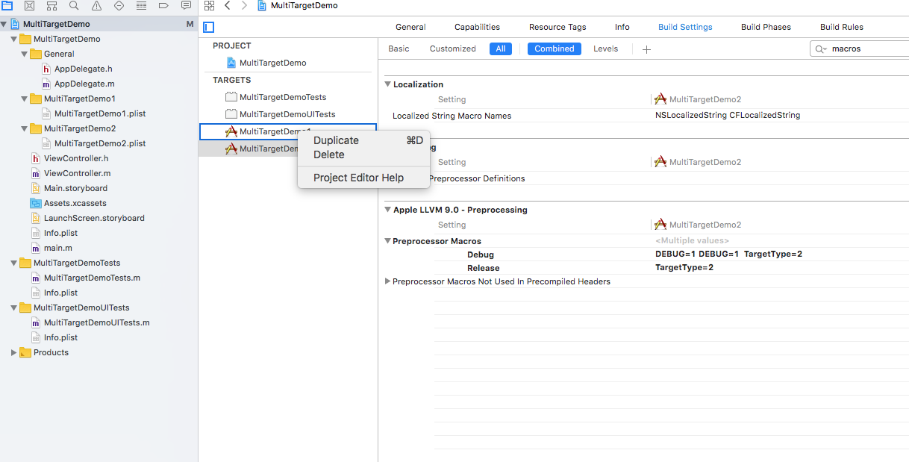
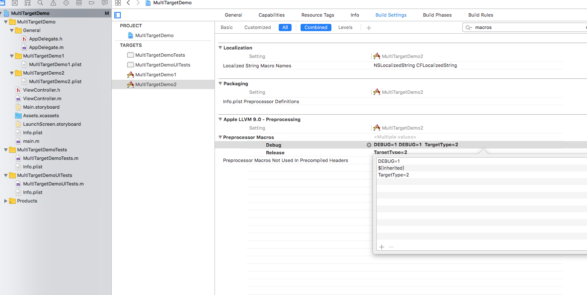
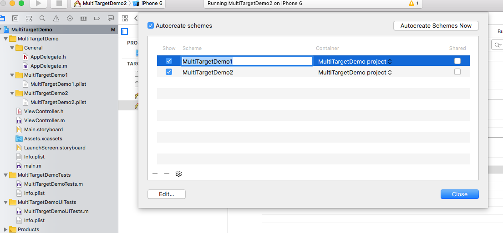
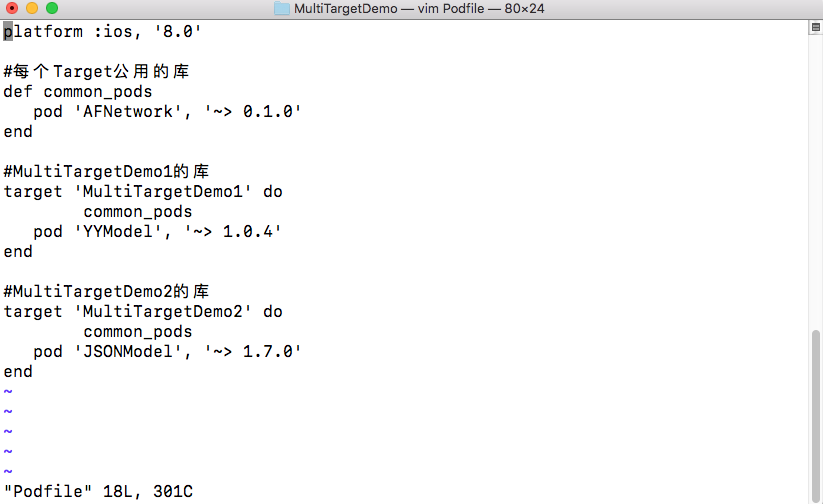
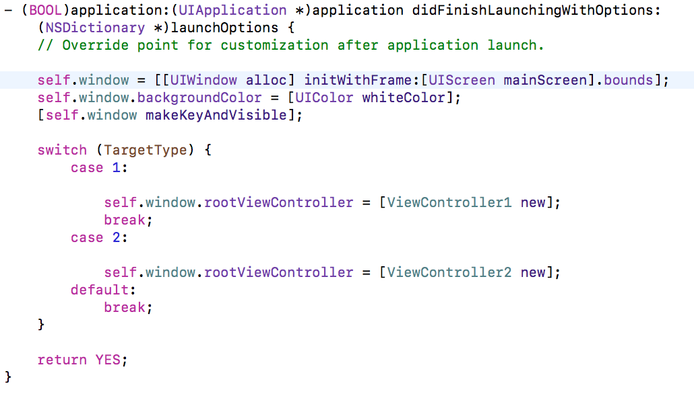

iOS多Target开发
1. iOS多Target开发的使用场景
1. 自己制作的第三方库，需要提供许多测试demo，通常使用多Target集成到一个Project会比较方便；
2. 多个App有许多数据是可共享的，或者多个App很相似，可以利用多Target来简化代码量，也方便维护；
2. Xcode中Project与Target的区别
Project类似一个仓库， Target类似仓库中的产品， 一个仓库可以有许多个产品，这些产品也可以公用仓库中的原料，或者设置 只有某一个产品能用某一种或几种原料。
3. 如何构建多个Target
1. 新建一份工程：MultiTargetDemo
2. 点击Project -> TATGETS -> MultiTargetDemo -> 右键Duplicate赋值多个Target(或者可以file new 创建，但是会多出许多东西，比如AppDelegate...)，修改Target名称为自己所需
3.将新生成的plist文件更改至自己所要的名称，并在Project -> TATGETS -> MultiTargetDemo1(新建的Target) -> general 关联相关的plist文件, 并设置Display Name, Bundle Id等，在Build Setting中设置Code Signing证书
4.多Target区分：点击Project -> 新建的Target -> Build Setting 搜索 macros -> 在Preprocessors Macros 中为每一个新建的Target添加一个用来区分的字段TargetType，并设置不同的值来进行区分
5.修改修改Xcode左上角的Target名称：选中Xcode左上角的创建工程时的Target，选择Manage schemes，按回车键或者轻点可以修改 相关Target的名称
6.多Target中CocoaPods的使用：
7.不同Target下代码的使用：
